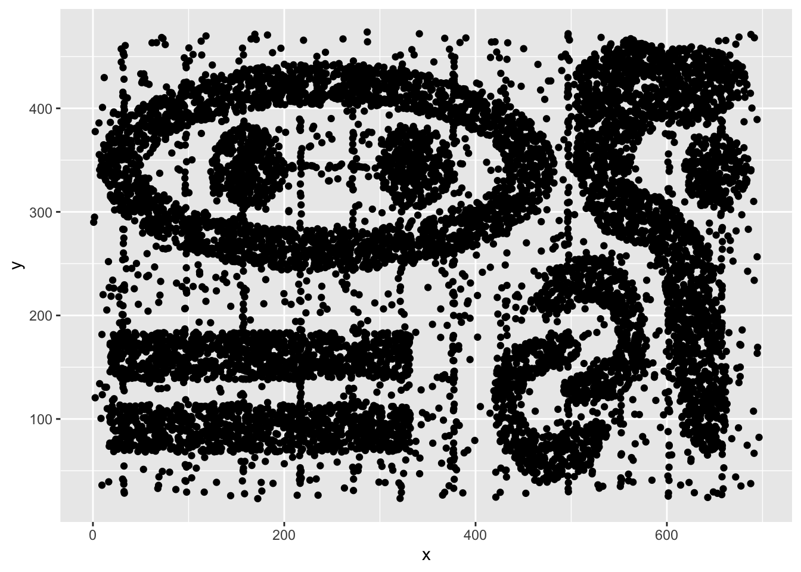

library(mclust)
library(factoextra)
library(FactoMineR)
library(dbscan)
library(seriation)TP 2 : DBSCAN
4modIA / 2025-2026
L’objectif de ce TP est d’illustrer les notions abordées pour la méthode DBSCAN. Les librairies R nécessaires pour ce TP :
1 Clustering des données de vins
1.1 Reprise des données
On reprend dans ce TP les données wine disponibles sur la page moodle du cours. On charge ici les données.
wine<-read.table("wine.txt",header=T)
wine$Qualite = as.factor(wine$Qualite)
wine$Type = factor(wine$Type, labels = c("blanc", "rouge"))
wineinit<-wine
wine[,-c(1,2)]<-scale(wine[,-c(1,2)],center=T,scale=T)
head(wine)On fait une ACP pour la visualisation des résultats dans la suite
resacp<-PCA(wine,quali.sup=c(1,2), scale.unit = TRUE,graph=FALSE)
fviz_pca_ind(resacp,habillage=2,geom=c("point"))1.2 DBSCAN à paramètres fixés
Question : Dans un premier temps, utilisez l’algorithme DBSCAN avec les paramètres minPts= 7 et eps= 1 à l’aide de la fonction dbscan() de la librairie dbscan. Quels sont les effectifs par classe ? Combien d’individus ne sont pas classés ?
# A COMPLETER
minPts<-7
eps<-1
res.db <- dbscan::dbscan(...)
table(...)fviz_cluster(res.db, wine[,-c(1:2)], geom="point",ellipse="FALSE")+
theme(legend.position="none")+
xlab("")+ylab("")+ggtitle("Avec DBSCAN")1.3 Influence des paramètres de DBSCAN
Question : Pour étudier l’influence des paramètres minPts et eps, évaluez le nombre de classes obtenues et le nombre d’individus non classés pour différentes valeurs de ces paramètres.
minPts <- ...
eps <- ...
NBCluster <- matrix(0,nrow=length(minPts),ncol=length(eps))
NBNonCl <-matrix(0,nrow=length(minPts),ncol=length(eps))
for (i in 1:length(minPts)){
for (j in 1:length(eps)){
res<-dbscan::dbscan(wine[,-c(1,2)], eps=eps[j], minPts=minPts[i])
NBCluster[i,j] <- ...
NBNonCl[i,j] <- ...
}
}
df<-data.frame(eps=rep(eps,each=length(minPts)),
minPts=as.factor(rep(minPts,length(eps))),
NBCluster=c(NBCluster),
NBNonCl=c(NBNonCl)*100/nrow(wine))
ggplot(df,aes(x=eps,y=NBCluster,col=minPts))+geom_point()+geom_line()
ggplot(df,aes(x=eps,y=NBNonCl,col=minPts))+geom_point()+geom_line()Question : Pour une valeur de minPts=7, tracez le graphe de distance kNN afin de choisir le paramètre eps. Vous pouvez utiliser la fonction kNNdistplot(). Qu’en pensez-vous ?
# A COMPLETER1.4 Comparaison avec les Kmeans
Question : A l’aide des questions précédentes, choisissez des paramètres pour obtenir un clustering à 4 classes. Comparez cette classification avec celle obtenue par les Kmeans pour le même nombre de classes.
# A COMPLETER2 Clustering sur données simulées
Dans cette partie, on considère les données simulées “chameleon_ds7” disponibles dans la librairie seriation.
library(seriation)
data(Chameleon)
ggplot(chameleon_ds7,aes(x=x,y=y))+geom_point()
Question : Mettez en place une stratégie de classification de ces données par DBSCAN et par Kmeans. Comparez les résultats. Retrouvez les grandes caractéristiques de ces deux méthodes.
# A COMPLETER